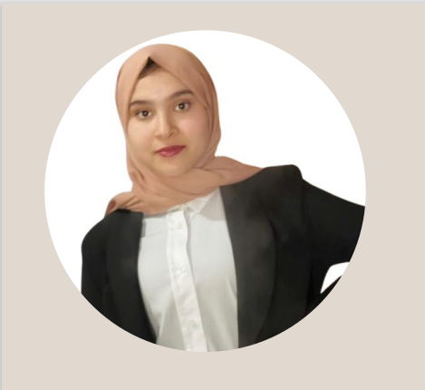

|  |
EL IYSAOUY IKRAM
|
Je m'appelle EL IYSAOUY IKRAM. Je suis étudiante à l’ECOLE NATIONALE SUPERIEURE D’INFORMATIQUE ET D’ANALYSE DE SYSTEMES et je prévois d’avoir un profil d’une consultante BI (Business intelligence) capable d’accompagner les clients dans l’analyse et la formulation des besoins, de concevoir et mettre en œuvre un projet décisionnel et d’analyser l’évolution d’une solution décisionnelle.
Pour avoir ce profil il faut maitriser en premier lieu la théorie de la Business Intelligence (avoir une vision globale sur la chaine décisionnelle et une approche détaillée des différentes phases de la chaîne), modélisation, conception des différentes phases, exemples de mises en place).Puis, étudier et améliorer les compétences concernant la gestion d’un projet décisionnel (fondamentaux de la gestion de projets et focus sur les spécificités d’un projet BI).Ensuite, pratiquer la Business Intelligence (gestion de la qualité des données, extraire, transformer et charger (ETL), reporting, multidimensionnel, datamining).De plus, il faut étudier une large palette d'outils BI : POWER BI –PYTHON - Microsoft BI : SSIS/SSRS/ SSAS - QlikView / QlikSence - Tableau Software - SAP BO / SAP BW - SAS BI… .
| Annee universitaire | Diplome | Etape | Etablissement |
|---|---|---|---|
| 2021-2022 | Diplome d'ingenieur d'etat Filiere: Business intelligence and Analytics |
1 ere Annee | Ecole Nationale d'Informatique et d'analyse des systemes |
| 2022-2023 | Diplome d'ingenieur d'etat Filiere: Business intelligence and Analytics |
2 eme Annee | Ecole Nationale d'Informatique et d'analyse des systemes |